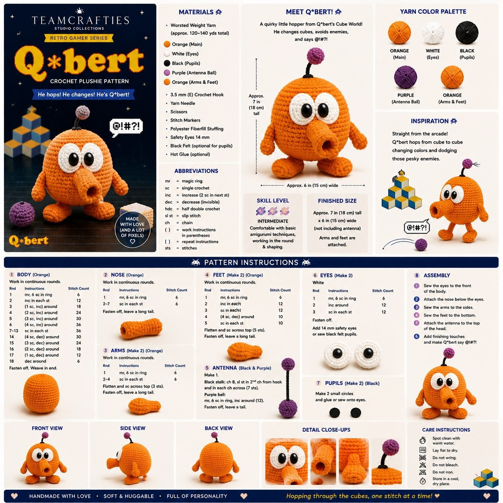

Q*bert
A playful crochet plushie pattern inspired by the classic cube-hopping arcade troublemaker, with orange body pieces, big eyes, a purple antenna ball, and assembly notes for the full character.

Retro arcade energy
The original sheet uses bright orange, yellow, purple, and blue with playful pixel-style details. It feels cheerful, nostalgic, and character-driven — perfect for a little retro gamer shelf buddy.
Materials
Abbreviations
Pattern sections
Before assembly
Assembly
Care notes
Pattern note
This page is based on the uploaded Team Crafties pattern sheet. It preserves the visible structure, materials, sections, and character details from the artwork while keeping the instructions printable and easy to browse online.
Branding on the sheet includes TeamCrafties Studio Collections, Retro Gamer Series, and cheerful footer lines like handmade with love, soft & huggable, and full of personality.